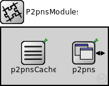
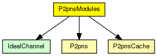
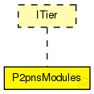

This documentation is released under the Creative Commons license
This documentation is released under the Creative Commons licenseImplementation of "P2PNS: A distributed name service for P2PSIP"
Author: Ingmar Baumgart
The following diagram shows usage relationships between types. Unresolved types are missing from the diagram. Click here to see the full picture.
The following diagram shows inheritance relationships for this type. Unresolved types are missing from the diagram. Click here to see the full picture.
| Name | Value | Description |
|---|---|---|
| display | i=block/segm |
| Name | Direction | Size | Description |
|---|---|---|---|
| udpIn | input |
gate from the UDP layer |
|
| from_lowerTier | input |
gate from the lower tier |
|
| from_upperTier | input |
gate from the upper tier |
|
| tcpIn | input |
gate from the TCP layer |
|
| tcpOut | output |
gate to the TCP layer |
|
| udpOut | output |
gate to the UDP layer |
|
| to_lowerTier | output |
gate to the lower tier |
|
| to_upperTier | output |
gate to the upper tier |
| Name | Type | Default value | Description |
|---|---|---|---|
| p2pns.rpcUdpTimeout | double |
default timeout value for direct RPCs |
|
| p2pns.rpcKeyTimeout | double |
default timeout value for routed RPCs |
|
| p2pns.optimizeTimeouts | bool |
calculate timeouts from measured RTTs and network coordinates |
|
| p2pns.rpcExponentialBackoff | bool |
if true, doubles the timeout for every retransmission |
|
| p2pns.debugOutput | bool |
enable debug output |
|
| p2pns.twoStageResolution | bool |
enable two stage name resolution (KBR/DHT) |
|
| p2pns.keepaliveInterval | double |
interval between two keeaplive pings for active connections |
|
| p2pns.idCacheLifetime | double |
idle connections in the idCache get deleted after this time |
|
| p2pns.registerName | string |
register the P2PNS id under this name |
// // Implementation of "P2PNS: A distributed name service for P2PSIP" // // @author Ingmar Baumgart // module P2pnsModules like ITier { parameters: @display("i=block/segm"); gates: input udpIn; // gate from the UDP layer input from_lowerTier; // gate from the lower tier input from_upperTier; // gate from the upper tier input tcpIn; // gate from the TCP layer output tcpOut; // gate to the TCP layer output udpOut; // gate to the UDP layer output to_lowerTier; // gate to the lower tier output to_upperTier; // gate to the upper tier submodules: p2pns: P2pns { @display("p=137,42"); } p2pnsCache: P2pnsCache { @display("p=53,42"); } connections allowunconnected: from_lowerTier --> p2pns.from_lowerTier; to_lowerTier <-- p2pns.to_lowerTier; from_upperTier --> p2pns.from_upperTier; to_upperTier <-- p2pns.to_upperTier; }
This documentation is released under the Creative Commons license